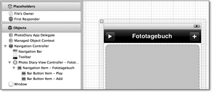
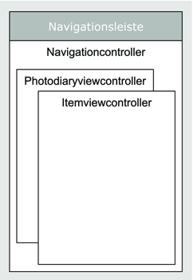
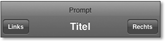
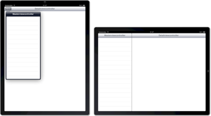
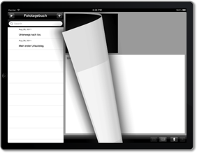

Zum Online-Shop
Zum Online-Shop
4.6 Containerviewcontroller
Das UIKit enthält mittlerweile mehrere Arten von Containerviewcontrollern, die zur Anzeige weiterer Viewcontroller dienen. Sie haben bereits den Popoverviewcontroller kennengelernt, der auch zu dieser Kategorie gehört. Das Fototagebuch verwendet in der iPhone-Variante aber noch zwei und auf dem iPad sogar drei andere Containerviewcontroller.
4.6.1 Der Navigationcontroller
Sie haben bereits die beiden wichtigsten Viewcontroller des Fototagebuchs kennengelernt. Es fehlt aber noch die Verbindung zwischen diesen beiden Controllern. Der Photodiaryviewcontroller muss ja den Itemviewcontroller anzeigen, wenn Sie einen neuen Eintrag anlegen oder einen bestehenden bearbeiten wollen.
Sie können natürlich den Itemviewcontroller als modalen Dialog anzeigen, was aber sehr untypisch für iOS-Apps wäre. Apps mit Tableview schieben in dieser Situation vielmehr den neuen View von rechts in den Bildschirm und stellen oberhalb des Views eine Navigationsleiste dar. Diese Darstellung erfolgt in den meisten Fällen über einen Viewcontroller der Klasse UINavigationController (siehe Abbildung 4.19).
Abbildung 4.19 Navigationcontroller und -bar im Interface Builder
Ein Navigationcontroller verwaltet eine Hierarchie von mehreren Viewcontrollern, die er über einen internen Stapel verwaltet. Dabei zeigt er aber immer nur den obersten Controller an. Die Hierarchie muss immer mindestens einen Viewcontroller enthalten. Über die Methode pushViewController:animated: können Sie einen anderen Viewcontroller über den obersten Controller legen. Der Navigationcontroller schiebt dabei den neuen View von rechts herein, wenn Sie für den Parameter animated den Wert YES übergeben.
Über die Methode popViewControllerAnimated: können Sie den obersten Viewcontroller wieder aus der Hierarchie entfernen. Bei eingeschalteter Animation schiebt der Navigationcontroller den obersten View nach rechts aus dem Bildschirm. Nach dem Entfernen zeigt der Navigationcontroller wieder den vorherigen View an.
Die Klasse UIViewController besitzt die Property navigationController. Diese Property verweist auf den Navigationcontroller, auf dem der Viewcontroller liegt. Sie hat den Wert nil, wenn sich der Viewcontroller nicht auf dem Stapel eines Navigationcontrollers befindet. Die iPhone-Variante des Fototagebuchs verwendet einen Navigationcontroller als Rootviewcontroller, in dem der Photodiaryviewcontroller als unterstes Element liegt. Nach dem Start zeigt das Fenster der App den Rootviewcontroller – also den Navigationcontroller mit dem Photodiaryviewcontroller als oberstem Element – an, und der Photodiaryviewcontroller zeigt den Itemviewcontroller über dem Navigationcontroller an. Abbildung 4.20 stellt diese Hierarchie schematisch dar.
Abbildung 4.20 Hierarchie der Viewcontroller
Wenn Sie eine Zelle in dem Tableview berühren, ruft der Tableview die Delegatemethode tableView:didSelectRowAtIndexPath: auf, die den Itemviewcontroller auf den Navigationstack schiebt. Sie müssen aber vorher den Tagebucheintrag an den Itemviewcontroller übergeben, damit er die richtigen Werte anzeigt. Dazu können Sie dessen Property diaryEntry verwenden.
- (void)tableView:(UITableView *)inTableView
didSelectRowAtIndexPath:(NSIndexPath *)inIndexPath {
DiaryEntry *theItem = [self entryForTableView:inTableView atIndexPath:inIndexPath];
self.itemViewController.item = theItem;
[self.navigationController
pushViewController:self.itemViewController animated:YES];
}
Listing 4.59 Anzeige eines Eintrags über den Navigationcontroller
| Datenweitergabe zwischen Viewcontrollern |
|
Verwenden Sie öffentliche Propertys, um Daten zwischen verschiedenen Controllern zu übertragen. In der Methode, die den neuen Viewcontroller aufruft, brauchen Sie dann nur die Werte für die Propertys zu setzen. |
Die Navigationsleiste
Der Navigationcontroller verwaltet aber nicht nur die Viewcontroller, sondern auch die Navigationsleiste. Sie können diese im Interface Builder konfigurieren. Wenn Sie in der XIB-Datei einen Navigationcontroller anlegen, enthält er automatisch einen View der Klasse UINavigationBar (siehe Abbildung 4.19).
In der Navigationsleiste können Sie verschiedene Elemente anzeigen lassen. Diese Elemente legen Sie nicht direkt in die Navigationsleiste sondern in einen Navigationitem. Die Klasse UIViewController besitzt eine Property navigationItem, über die jeder Viewcontroller einen eigenen Navigationitem halten kann, den der Interface Builder in der Baumdarstellung innerhalb des Viewcontrollers darstellt.
Die Navigationsleiste zeigt die Elemente des Navigationitems des obersten Viewcontrollers an. Der Navigationcontroller tauscht also die Elemente in der Navigationsleiste automatisch aus, wenn Sie einen Viewcontroller auf den Stapel des Navigationcontrollers legen oder ihn davon entfernen.
Die Navigationsleiste hat dabei einen festen Aufbau. Es gibt vier Positionen, an denen Sie Elemente anzeigen lassen können. Dabei legt die Leiste das Layout fest.
Abbildung 4.21 Die Elemente der Navigationsleiste
Alternativ kann sie auf der linken Seite auch einen Zurück-Button anzeigen, dessen Standardlayout von den anderen Buttons abweicht.
Abbildung 4.22 Zurück-Button im Fototagebuch
| Element | Typ | Beschreibung |
| Linker und rechter Button | UIBarButtonItem | Das sind einfache Buttons, die die Leiste auf der linken und der rechten Seite anzeigt. |
| Titel | NSString, UIView | Der Titel ist in der Regel ein einfacher Text. Sie können dafür aber auch einen beliebigen View angeben. |
| Prompt | NSString | Das ist ein beliebiger Text, den die Leiste oberhalb der anderen Elemente anzeigt. Eine Navigationsleiste mit Prompt ist höher als ohne. Diese Größenanpassung geschieht automatisch. |
| Zurück-Button | UIBarButtonItem | Der Zurück-Button erscheint in der Navigationsleiste, wenn Sie auf den bereits vorhandenen Viewcontroller einen weiteren pushen. Sie verändern damit also die Navigationsleiste des darüber liegenden Views. |
Die Buttons in der Navigationsleiste und der Werkzeugleisten haben die Klasse UIBarButtonItem, die aber keine Unterklasse von UIView ist. Sie können das Aussehen dieser Buttons auch nur sehr begrenzt verändern. Die Farbe des Buttons bestimmt Cocoa Touch automatisch über die Hintergrundfarbe der Navigationsleiste und den Typ des Buttons. Die Schriftfarbe ist immer Weiß.
Wenn Sie für den Button einen Standardtyp und für die Leiste eine der drei Standardfarben wählen, dann ist der Button entweder graublau (Leistenfarbe Default, siehe Abbildung 4.21) beziehungsweise schwarz (Leistenfarbe Black Translucent oder Black Opaque, wie in Abbildung 4.19). Eine Ausnahme bilden die blauen Standard-Buttons Save und Done (siehe Abbildung 4.13 und Abbildung 4.15). Bei einer individuellen Hintergrundfarbe für die Navigationsleiste erhalten ebenfalls alle Buttons diese Farbe als Hintergrundfarbe. Lediglich die Farbe des Save- und des Done-Buttons ist etwas dunkler. Aber Vorsicht mit zu hellen Farben, da die Buttons immer eine weiße Beschriftung haben.
| Lokalisierung von Bar-Button-Items |
|
Cocoa Touch lokalisiert automatisch die Texte in den Standardbuttons, wenn Sie für die entsprechende XIB-Datei eine lokalisierte Variante anlegen. Sie brauchen ansonsten nichts weiter zu unternehmen – die englische und die deutsche XIB-Datei können einen identischen Inhalt haben. |
Alternativ zu den Standardtypen steht auch der Typ Custom zur Verfügung, bei dem Sie entweder einen beliebigen Text oder ein Bild anzeigen lassen können. Das Bild sollte ungefähr 20 mal 20 Pixel groß sein. Der Button verwendet aber nur die Alphamaske des Bildes als weißes Piktogramm. Für Custom-Buttons gibt es drei mögliche Darstellungsarten:
- Plain: Der Button hat keinen Rahmen. Cocoa Touch zeichnet den Titel oder das Bild direkt auf die Leiste.
- Bordered: Die Buttons erhalten einen Rahmen. Die meisten Beispiele in diesem Kapitel verwenden diese Darstellungsart.
- Done: Die Buttons erhalten einen Rahmen und eine hervorgehobene Darstellung analog zum Start- und Done-Button.
| Zustandsanzeige in Barbuttonitems |
|
Sie legen den Typ eines Barbuttonitems bei der Konstruktion fest und können ihn später nicht mehr ändern. Die Werkzeugleiste des Audioplayers zeigt den Wiedergabezustand durch einen Wechsel des Buttonbildes an. Dazu verwendet der Player zwei Bilder, obwohl es dafür Standardtypen gibt. Diese können Sie aber nicht verwenden, da Sie den Buttontyp nachträglich nicht ändern können. Sie können höchstens den kompletten Button austauschen. Die Bilder des Buttons können Sie hingegen ändern. |
Sie können auch in einem Barbuttonitem oder im Titel der Navigationsleiste nahezu beliebige Views anzeigen lassen. Dazu ziehen Sie im Interface Builder einfach den gewünschten View auf den gewünschten Platz im Navigationitem. Der Interface Builder weist dann diesen View der Property customView des Barbuttonitems zu.
Ein Barbuttonitem ist kein Control, und er verschickt auch nicht die üblichen Actionevents. Stattdessen gibt es im Verbindungsinspektor eine Actionverbindung namens selector, der Sie eine Actionmethode zuweisen können. Diese Actionmethode ruft der Button auf, wenn Sie ihn drücken. Das gilt aber nur, sofern Sie keinen View in den Button gelegt haben, der die Touchevents selber verarbeitet.
Der Zurück-Button
Der Zurück-Button nimmt gegenüber den anderen Elementen eines Navigation-Items eine Sonderrolle ein. Die Navigationsleiste zeigt niemals den Zurück-Button des aktuellen Controllers, sondern höchstens den des Vorgängers an. Das Fototagebuch legt beispielsweise den Itemviewcontroller auf den Photodiaryviewcontroller. Während die Navigationsleiste des Letzteren keinen Zurück-Button anzeigt, zeigt die Navigationsleiste des Itemviewcontrollers den Zurück-Button des Photodiaryviewcontrollers.
Der Navigationitem des Photodiaryviewcontrollers legt aber keinen Zurück-Button explizit fest. Cocoa Touch erzeugt ihn automatisch aus dem Titel des Navigationitems des Photodiaryviewcontrollers. Wenn Sie den Zurück-Button drücken, entfernt er den obersten Viewcontroller vom Stapel des Navigationcontrollers. Er ruft aber nicht die Actionmethode auf.
Sie können bis auf den Titel das Aussehen des Zurück-Buttons nicht beeinflussen. Cocoa Touch stellt ihn immer als Linkspfeil in der Farbe der Navigationsleiste dar. Allerdings zeigt die Navigationsleiste keinen Zurück-Button an, wenn Sie im Navigationitem einen linken Button festgelegt haben. Sie können also den linken Button im Navigationitem anstelle des Zurück-Buttons verwenden.
Die Navigationsleiste sucht den Button für die linke Seite in der folgenden Reihenfolge. Sie verwendet das erste Element, das verschieden von nil ist:
- der linke Button im Navigationsitem des aktuellen Viewcontrollers
- der Zurück-Button im Navigationitem des Viewcontrollers unterhalb des aktuellen. Sie können dessen Titel im Interface Builder über den Attributinspektor des Items festlegen, indem Sie in das Feld Back Button einen Text eingeben.
- ein Zurück-Button, der aus dem Titel des Navigationitems des Viewcontrollers unter dem aktuellen Viewcontroller erzeugt wird.
Die letzte Regel trifft nicht zu, wenn das Navigationitem oder dessen Titel nicht gesetzt ist oder der aktuelle Viewcontroller der Rootviewcontroller des Navigationcontrollers ist.
Die Werkzeugleiste
Sie haben bereits die Werkzeugleiste für den Audioplayer und -recorder kennengelernt (siehe Abbildung 4.13 und Abbildung 4.15). Diese Komponenten verwenden die Werkzeugleiste wie einen ganz gewöhnlichen View. Der Navigationcontroller kann aber auch eine Werkzeugleiste verwalten, deren Inhalt von dem gerade angezeigten Viewcontroller abhängt.
Damit der Navigationcontroller eine Werkzeugleiste anzeigt, müssen Sie ihn entsprechend konfigurieren. Dazu können Sie im Interface Builder entweder einen View der Klasse UIToolbar auf den Navigationcontroller ziehen. Alternativ können Sie auch einfach im Attributinspektor den Schalter Shows Toolbar setzen.
Sie können jedem Viewcontroller über die Property toolbarItems ein Array mit den Elementen für die Werkzeugleiste zuweisen. Die Elemente in dem Array müssen die Klasse UIBarButtonItem haben. Der Navigationcontroller zeigt automatisch die Elemente desjenigen Viewcontrollers an, der zuoberst auf dem Navigationstack liegt. Die Werkzeugleiste ordnet die enthaltenen Elemente immer von links nach rechts an. Sie können das Layout aber über feste und flexible Abstände beeinflussen. Mit diesen Elementen können Sie den Abstand zwischen zwei Barbuttonitems vergrößern. Dabei können Sie mit einem flexiblen Abstand den kompletten verfügbaren Freiraum belegen und so beispielsweise die dahinter liegenden Elemente an den rechten Rand schieben. Sie können die Elemente zentrieren, indem Sie links und rechts davon einen flexiblen Abstand legen.
Die Elemente für die Property toolbarItems können Sie leider nicht direkt über den Interface Builder verwalten. Diesen Mangel können Sie aber relativ einfach umgehen, indem Sie Ihrem Viewcontroller ein Outlet auf eine Werkzeugleiste geben. Die Elemente in dieser Werkzeugleiste können Sie über den Interface Builder verwalten. Der Controller zeigt aber diese Leiste nirgendwo an, sondern weist deren Elemente in der Methode viewDidLoad der Property toolbarItems zu.
Navigations- und Werkzeugleisten gestalten
Bis auf die Farbe können Sie das Aussehen der Navigations- oder Werkzeugleiste nicht beeinflussen. Bei einer Änderung der Farbe verändern Sie aber leider auch immer die Farbe der Buttons. Mit den Standardleisten haben Sie also nur sehr eingeschränkte Gestaltungsmöglichkeiten.
Sie können aber Unterklassen von UINavigationBar und UIToolbar anlegen, um mehr Gestaltungsmöglichkeiten zu erhalten. Die Unterklassen können über eine Implementierung der Methode drawRect: eigene Hintergrundmuster und -farben zeichnen.
Das Beispielprojekt Bars auf der beiliegenden DVD zeigt einen Navigationcontroller mit eigener Navigations- und Werkzeugleiste. Die Navigationsleiste hat die Klasse NavigationBar, die ein Bild als Hintergrund anzeigt.
- (void)drawRect:(CGRect)inRect {
UIImage *theImage = [UIImage imageNamed:@"background.png"];
[theImage drawAsPatternInRect:self.bounds];
}
Listing 4.60 Anzeige eines Hintergrundbildes
Sie können aber einem Navigationcontroller nicht einfach eine neue Navigationsleiste zuweisen, weil die Property navigationBar nicht schreibbar ist. Wenn Sie den Navigationcontroller aber über eine NIB-Datei erzeugen, können Sie im Identitätsinspektor der Navigationsleiste Ihre Klasse zuordnen.
Cocoa Touch legt die Farbe der Buttons auch in einer eigenen Navigationsleiste über deren Farbe fest. Sie können also über eine eigene Klasse für die Navigationsleiste auch die Farbgebung der Buttons von der Farbe der Leiste trennen.
4.6.2 Splitviewcontroller
Das iPad bietet gegenüber dem iPhone eine circa fünfmal größere Anzeigefläche. Der vorgestellte Aufbau ist auf dem iPad aber nicht so sinnvoll, da er zum einen viel Platz verschenkt. Zum anderen kann das Auswechseln des kompletten Views auf der großen Fläche des iPads sehr unruhig wirken.
Abbildung 4.23 Splitviewcontroller in Portrait und Landscape
Das iPad bietet mit dem Splitviewcontroller die Möglichkeit, im Querformat zwei Viewcontroller nebeneinander anzuzeigen. Da der linke Viewcontroller in der Regel den Inhalt des rechten festlegt, nennt Apple den linken Master- und den rechten Detailviewcontroller. Im Hochformat zeigt der Splitviewcontroller den Detailviewcontroller auf der kompletten Bildschirmfläche und den Masterviewcontroller optional in einem Popover an (siehe Abbildung 4.23). Damit das funktioniert, müssen aber beide Controller sowohl das Quer- als auch das Hochformat unterstützen. Für die Anzeige und die Steuerung des Popovers sollte der Detailviewcontroller außerdem eine Werkzeugleiste für den Button bieten.
Die Klasse UISplitViewController besitzt eine minimalistische Schnittstelle, die nur zwei Propertys enthält. Über viewControllers können Sie die beiden enthaltenen Viewcontroller in einem Array abfragen beziehungsweise festlegen. Dabei ist der erste Controller im Array der Master- und der zweite der Detailviewcontroller. Über die zweite Property bestimmen Sie das Delegate des Splitviewcontrollers.
Das Splitviewcontroller-Delegate
Das Delegate bietet drei optionale Methoden an, die Sie über die Anzeige des Masterviewcontrollers infomieren. Der Splitviewcontroller ruft splitViewController:popoverController:willPresentViewController: auf, bevor er den Master im übergebenen Popovercontroller anzeigt. Wenn der Splitviewcontroller in das Querformat wechselt, ruft er splitViewController:willShowViewController:invalidatingBarButtonItem: auf und beim Wechsel in das Hochformat splitViewController:willHideViewController:withBarButtonItem:forPopoverController:.
Der Splitviewcontroller verwaltet aber nicht nur die beiden Viewcontroller für Sie, sondern auch den Popoverviewcontroller und das Barbuttonitem für dessen Anzeige. Über die beiden letztgenannten Delegatemethoden brauchen Sie nur die Anzeige des jeweils übergebenen Barbuttonitems verwalten, um den Popoverviewcontroller anzeigen zu können. Die einfachste Möglichkeit dafür ist eine Toolbar, in die Sie den Button einfügen beziehungsweise aus der Sie den Button entfernen.
- (void)splitViewController:
(UISplitViewController*)inSplitViewController
willHideViewController:(UIViewController *)inMaster
withBarButtonItem:(UIBarButtonItem*)inButtonItem
forPopoverController:(UIPopoverController*)inPopover {
NSMutableArray *theItems =
[self.toolbar.items mutableCopy];
inBarButtonItem.title = ...;
[theItems insertObject:inButtonItem atIndex:0];
[self.toolbar setItems:theItems animated:YES];
[theItems release];
self.popoverController = inPopover;
}
Listing 4.61 Anzeige des Buttons für den Popovercontroller
Listing 4.61 enthält den Programmcode zur Anzeige des Barbuttonitems, über den Sie den Popovercontroller anzeigen lassen können. Sie müssen aber dafür nicht unbedingt diesen Button verwenden. Wenn Ihr Detailviewcontroller beispielsweise keine feststehende Werkzeugleiste besitzt, können Sie auch einen anderen Button verwenden. Das ist beispielsweise beim Fototagebuch der Fall, da es unter iOS 5 einen Pageviewcontroller für die Detailanzeige verwendet (siehe Abbildung 4.24).
Abbildung 4.24 Pageviewcontroller in einem Splitviewcontroller
Wenn der Splitviewcontroller ins Querformat wechselt, müssen Sie den Button wieder aus der Werkzeugleiste entfernen. Dazu können Sie die zuletzt genannte Delegatemethode verwenden. Den dafür notwendigen Programmcode finden Sie in Listing 4.62.
- (void)splitViewController:
(UISplitViewController*)inSplitViewController
willShowViewController:(UIViewController *)inViewController
invalidatingBarButtonItem:(UIBarButtonItem *)inButtonItem {
NSMutableArray *theItems = [sef.toolbar.items mutableCopy];
[theItems removeObjectAtIndex:0];
[self.toolbar setItems:theItems animated:YES];
[theItems release];
self.popoverController = nil;
}
Listing 4.62 Den Button für den Popovercontroller aus der Werkzeugleiste entfernen
Die iPad-Version des Fototagebuchs verwendet einen Splitviewcontroller als Rootviewcontroller, der über die Datei MainWindow-iPad.xib angelegt wird. Der Master ist dabei der Photodiaryviewcontroller, und der Detailbereich zeigt Itemviewcontroller an. Wenn Sie keinen Eintrag ausgewählt haben, speichert der Itemviewcontroller die Eingaben als neuen Eintrag ab, und bei einem ausgewählten Eintrag ändert er natürlich dessen Werte.
Diese beiden Implementierungen reichen für Detailviewcontroller mit feststehender Werkzeugleiste aus. Im Fototagebuch können Sie zwischen Itemviewcontrollern blättern, wodurch Sie auch die Werkzeugleiste auswechseln. Da der Popovercontroller den Button auch als Bezugspunkt braucht, muss das Fototagebuch ihn selber verwalten. Dort ist das Appdelegate auch das Delegate des Splitviewcontrollers. Es speichert sowohl den Popovercontroller als auch den Button in den Propertys popoverController beziehungsweise barButtonItem. Die Delegatemethoden machen nichts weiter, als diese Propertys zu setzen:
- (void)splitViewController:
(UISplitViewController *)inSplitViewController
willHideViewController:(UIViewController *)inViewController
withBarButtonItem:(UIBarButtonItem *)inBarButtonItem
forPopoverController:(UIPopoverController *)inPopover {
self.popoverController = inPopover;
self.overviewButton = inBarButtonItem;
}
- (void)splitViewController:
(UISplitViewController *)inSplitViewController
willShowViewController:(UIViewController *)inViewController
invalidatingBarButtonItem:(UIBarButtonItem *)inButton {
self.popoverController = nil;
self.overviewButton = nil;
}
Listing 4.63 Delegatemethoden des Splitviewcontrollers im Fototagebuch
Die Aktualisierung der Werkzeugleiste übernimmt der Itemviewcontroller in seiner privaten Methode updateOverviewButton. Sie holt sich aus dem Appdelegate den Button. Falls er nicht gesetzt ist und die Werkzeugleiste noch den Button für das Popover enthält, entfernt die Methode den letztgenannten Button. Andernfalls prüft sie, ob das Appdelegate den Button enthält, es aber noch keinen Button in der Werkzeugleiste gibt. In diesem Fall legt die Methode einen neuen Button an.
- (void)updateOverviewButton {
PhotoDiaryAppDelegate *theDelegate =
(PhotoDiaryAppDelegate *)
[[UIApplication sharedApplication] delegate];
UIBarButtonItem *theButton = theDelegate.overviewButton;
NSMutableArray *theItems = [self.toolbar.items mutableCopy];
id theItem = [theItems objectAtIndex:0];
if(theButton == nil && [theItem tag] == kOverviewButtonTag) {
[theItems removeObjectAtIndex:0];
}
else if(theButton != nil &&
[theItem tag] != kOverviewButtonTag) {
theItem = [[UIBarButtonItem alloc] initWithTitle:
NSLocalizedString(@"Overview", @"Overview button")
style:UIBarButtonItemStyleDone target:self
action:@selector(showOverview:)];
[theItem setTag:kOverviewButtonTag];
[theItems insertObject:theItem atIndex:0];
[theItem release];
}
[self.toolbar setItems:theItems animated:YES];
}
Listing 4.64 Anlegen und Löschen des Buttons für das Popover
Die Methode prüft die Existenz des Buttons in der Werkzeugleiste anhand des Tags, dessen Wert die Konstante kOverviewButtonTag festlegt. Sie vermeidet dadurch, den falschen Button zu löschen oder mehr als einen Button für das Popover einzufügen.
Der Itemviewcontroller muss die Werkzeugleiste nach seinem Erscheinen und nach einer Drehung anpassen. Aus diesem Grund enthalten die Methoden viewDidAppear: und didRotateFromInterfaceOrientation: jeweils einen Aufruf der Methode updateOverviewButton.
4.6.3 Der Pageviewcontroller
Wenn Sie sich mehrere Einträge des Tagebuches ansehen möchten, kann es besonders auf dem iPhone sehr anstrengend sein, zwischen den Einträgen zu wechseln. Sie müssen von einem Eintrag immer zuerst zurück zur Übersicht, um den nächsten Eintrag betrachten zu können. Für den Nutzer ist es angenehmer, wenn er auch direkt von einem Eintrag zu dessen Vorgänger oder Nachfolger wechseln kann. Diesen Anwendungsfall setzen viele Apps über eine Wischnavigation um, bei der Sie auf dem Bildschirm nach rechts oder links streichen, um zum vorherigen oder nächsten Element zu gelangen.
Apple hat in iOS 5 mit der Klasse UIPageViewController einen weiteren Containerviewcontroller eingeführt, der das Blättern zwischen beliebig vielen Viewcontrollern erlaubt. Er animiert dabei den Wechsel durch eine Pagecurlanimation, die das Umschlagen einer Buchseite (horizontales Blättern) oder eines Kalenderblattes (vertikales Blättern) nachahmt. Sie können eine von drei möglichen Blätterpositionen wählen:
- UIPageViewControllerSpineLocationMin der linke oder obere Rand des Views
- UIPageViewControllerSpineLocationMid die horizontale oder vertikale Mittelachse des Views
- UIPageViewControllerSpineLocationMax der rechte oder untere Rand des Views
| Ein- und doppelseitige Darstellung |
|
Die doppelseitige Darstellung des Pageviewcontrollers eignet sich in der Regel nur in der Landscapeausrichtung beim horizontalen Blättern oder in der Portraitausrichtung beim vertikalen Blättern. Über die Delegatemethode pageViewController:spineLocationForInterfaceOrientation: können Sie die Bezugsposition für das Blättern bei einer Viewrotation ändern. |
Wenn der Pageviewcontroller eine Mittelachse als Bezug verwendet, stellt er immer zwei Viewcontroller gleichzeitig dar, ansonsten nur einen. In diesem Fall können Sie eine doppelseitige Darstellung über die Property doubleSided wählen. Dann verwendet der Pageviewcontroller jeden zweiten Controller zur Darstellung der Rückseite seines Vorgängers. Das Fototagebuch verwendet aber nur eine einseitige Darstellung mit automatisch generierten Rückseiten. Das sind einfach stark aufgehellte Abbilder der Vorderseite.
Einen Pageviewcontroller erzeugen
Sie können einen Pageviewcontroller sowohl über Programmanweisungen als auch über NIBs beziehungsweise Storyboards anlegen. Falls Sie den letztgenannten Weg wählen, müssen Sie dem Controller aber nach der Erzeugung seine initialen Viewcontroller zuweisen. Das Beispielprojekt Page, das Sie auf der beiliegenden DVD finden, erzeugt den Controller über den Quellcode.
| Das Beispielprojekt Page |
|
Das Beispielprojekt Page setzt iOS 5 und Xcode 4.2 voraus, und es verwendet Automatic Reference Counting. Wundern Sie sich also nicht über fehlende Speicherverwaltungsaufrufe. Außerdem verwendet es ein Storyboard anstelle von XIB-Dateien. |
Bei der Konstruktion eines Pageviewcontrollers legen Sie die Richtung und die Animation des Blätterns fest. Diese Werte können Sie später nicht mehr ändern. Als Animationstyp steht zurzeit nur UIPageViewControllerTransitionStylePageCurl zur Verfügung. Da der Initializer hierfür aber einen Parameter vorsieht, plant Apple anscheinend zukünftig noch weitere Animationstypen zu unterstützen. Die Bezugsposition für das Blättern übergeben Sie in einem Dictionary unter dem Schlüssel UIPageViewControllerOptionSpineLocationKey.
UIPageViewControllerNavigationOrientation theOrientation =
self.selectedNavigationOrientation;
UIPageViewControllerSpineLocation theLocation =
[self spineLocationForInterfaceOrientation: self.interfaceOrientation navigationOrientation:theOrientation];
BOOL isDoubleSided =
self.doubleSidedControl.selectedSegmentIndex;
NSDictionary *theOptions =
[NSDictionary dictionaryWithObjectsAndKeys:
[NSNumber numberWithInt:theLocation], UIPageViewControllerOptionSpineLocationKey, nil];
UIPageViewController *theController =
[[UIPageViewController alloc] initWithTransitionStyle: UIPageViewControllerTransitionStylePageCurl
navigationOrientation:theOrientation options:theOptions];
NSArray *theControllers =
[self viewControllersForSpineLocation:theLocation];
theController.doubleSided = isDoubleSided ||
theLocation == UIPageViewControllerSpineLocationMid;
theController.dataSource = self;
theController.delegate = self;
[theController setViewControllers:theControllers direction:self.selectedDirection animated:YES completion:NULL];
Listing 4.65 Erzeugen eines Pageviewcontrollers
Nach der Konstruktion können Sie wählen, ob der Controller eine ein- oder doppelseitige Darstellung verwenden soll. Allerdings dürfen Sie bei der mittleren Blätterposition nur die doppelseitige Darstellung angeben. Außerdem müssen Sie die Viewcontroller setzen, die der Pageviewcontroller nach seinem Erscheinen anzeigen soll. Auch hier ist die mittlere Blätterposition ein Sonderfall, da das Array hier zwei Viewcontroller enthalten muss. Für die anderen Positionen darf das Array hingegen immer nur ein Element enthalten. Diese Konfigurationsoptionen fasst Tabelle 4.6 noch einmal zusammen.
| Blätterposition | Rückseitendarstellung | Anzahl Viewcontroller |
| Minimal | Ein- und doppelseitig | 1 |
| Mitte | Doppelseitig | 2 |
| Maximal | Ein- und doppelseitig | 1 |
Listing 4.65 verwendet zwei Hilfsmethoden, um die Parameter für die Konstruktion und Konfiguration zu ermitteln. Die Methode spineLocationForInterfaceOrientation:navigationOrientation: berechnet zu der Interfaceausrichtung und der Blätterrichtung die Blätterposition. Diese Methode liefert die mittlere Position bei den Werten Landscape und horizontal beziehungsweise Portrait und vertikal. Ansonsten gibt sie die Auswahl des entsprechenden Controls zurück. Die Methode viewControllersForSpineLocation: liefert ein Array mit so vielen Viewcontrollern zurück, wie in Tabelle 4.6 angegeben sind.
Dieses Array übergeben Sie über die Methode setViewControllers:direction: animated:completion: an den Pageviewcontroller. Dabei sind die weiteren Parameter nur für bereits angezeigte Controller relevant. Über den Parameter animated legen Sie fest, dass die neuen Seiten durch ein Umblättern erscheinen. Die Richtung des Blätterns können Sie über den Parameter direction festlegen. Der letzte Parameter kann eine Blockfunktion enthalten, die der Controller nach Beendigung der Animation aufruft. Blockfunktionen stellt Kapitel 5 vor.
Die Datenquelle und das Delegate
Für das Blättern müssen Sie dem Pageviewcontroller jeweils die benötigten Viewcontroller für die Seiten zur Verfügung stellen. Dazu müssen Sie eine Datenquelle mit dem Protokoll UIPageViewControllerDataSource bereitstellen. Es hat die zwei notwendigen Methoden pageViewController:viewControllerBeforeViewController: und pageViewController:viewControllerAfterViewController:, mit denen der Pageviewcontroller jeweils auf den Vorgänger beziehungsweise Nachfolger eines Viewcontrollers zugreifen kann. Das Beispielprogramm verwendet für die Seiten einfach Viewcontroller, die eine Seitenzahl anzeigen. Die Methoden der Datenquelle erzeugen jeweils einen neuen Viewcontroller, bei dem die Seitennummer um eins niedriger oder höher ist. Listing 4.66 enthält die Methode der Datenquelle zur Bestimmung des Vorgängers. Die Implementierung für den Nachfolger ist bis auf die vorletzte Zeile gleich.
- (UIViewController *)pageViewController: (UIPageViewController *)inPageViewController viewControllerBeforeViewController:
(UIViewController *)inViewController {
LabelViewController *theController =
(LabelViewController *)inViewController;
return [self labelViewControllerWithPageNumber: theController.pageNumber – 1];
}
Listing 4.66 Erzeugung des Vorgängers in der Datenquelle
| Storyboards und die Erzeugung von Viewcontrollern |
|
Da das Projekt ein Storyboard verwendet, müssen Sie neue Viewcontroller darüber erzeugen. Sie gelangen an das Storyboard über die Property storyboard des Viewcontrollers. Es hat die Methode instantiateViewControllerWithIdentifier:, mit der Sie einen neuen Viewcontroller anlegen können. Dessen Kennung legen Sie über das Feld Identity im Attributinspektor des Controllers im Interface Builder fest. |
|
- (id)labelViewControllerWithPageNumber:(NSInteger)inPage { |
Der Pageviewcontroller verändert bei einer Viewrotation die Blätterposition. Dazu implementiert sein Delegate, das das Protokoll UIPageViewControllerDelegate implementiert, die Methode pageViewController:spineLocationForInterfaceOrientation:, die Listing 4.67 wiedergibt.
- (UIPageViewControllerSpineLocation)pageViewController:
(UIPageViewController *)inPageViewController
spineLocationForInterfaceOrientation:
(UIInterfaceOrientation)inOrientation {
UIPageViewControllerNavigationOrientation theOrientation =
inPageViewController.navigationOrientation;
UIPageViewControllerSpineLocation theLocation =
[self spineLocationForInterfaceOrientation:inOrientation
navigationOrientation:theOrientation];
NSArray *theControllers =
[self viewControllersForSpineLocation:theLocation];
[inPageViewController setViewControllers:theControllers
direction:self.selectedDirection
animated:YES completion:NULL];
return theLocation;
}
Listing 4.67 Berechnung der Blätterposition für die Viewrotation
Diese Methode liefert aber nicht nur die neue Blätterposition zurück. Sie muss zusätzlich dafür sorgen, dass der Pageviewcontroller die richtige Anzahl an Viewcontrollern enthält.
Der Pageviewcontroller im Fototagebuch
Für das Beispielprojekt Page brauchen Sie mindestens iOS 5. Mit einer niedrigeren iOS-Version können Sie das Projekt weder übersetzen noch auf einem Gerät ausführen. Das Fototagebuch soll sich aber auch mit iOS 4.0 übersetzen und ausführen lassen. Dazu brauchen Sie erst mal eine Antwort auf die Frage, wie die Applikation ohne Pageviewcontroller funktionieren soll. Das Fototagebuch geht den einfachsten Weg, indem es keine alternative Navigation anbietet.
Auf den Quellcode hat die Kompatibilität zu iOS 4 zwei Auswirkungen:
- Wenn Sie das Programm mit einem alten SDK übersetzen, darf der Compiler auf keine Anweisungen mit dem Pageviewcontroller stoßen. Sie müssen diesen Code sozusagen verstecken.
- Wenn Sie die App mit dem 5er-SDK übersetzen und auf einem Gerät mit iOS 4 ausführen, darf sie den Pageviewcontroller nicht verwenden.
Der erste Punkt lässt sich relativ einfach über den Präprozessor realisieren. Das iOS SDK definiert für jede unterstützte iOS-Version ein Makro __IPHONE_X_Y, wobei X und Y für die Haupt- und Unterversionsnummer stehen. Für iOS 4.3 heißt das Makro beispielsweise __IPHONE_4_3. Sie können durch die Existenz dieser Makros auf die iOS-Version schließen.
Das Fototagebuch verwendet für die Einbindung des Pageviewcontrollers die Kategorie PhotoDiaryViewController(PageView), um den Code aus der Viewcontrollerklasse auszulagern. Diese Kategorie darf aber nur dann das Delegate und die Datenquelle des Pageviewcontrollers implementieren, wenn die entsprechenden Protokolle auch verfügbar sind. Der Header sieht deswegen folgendermaßen aus:
@interface PhotoDiaryViewController(PageView)
#ifdef __IPHONE_5_0
<UIPageViewControllerDataSource, UIPageViewControllerDelegate>
#endif
- (void)setupPageViewControllerWithViewController:
(UIViewController *)inViewController;
- (ItemViewController *)itemViewControllerWithIndexPath:
(NSIndexPath *)inIndexPath;
- (void)displayItemAtIndexPath:(NSIndexPath *)inIndexPath;
@end
Listing 4.68 Bedingte Kompilierung für Pageviewcontroller
Durch die Direktive in der zweiten Zeile blendet der Präprozessor die dritte Zeile nur bei der Verwendung eines iOS-SDK der Version 5.0 oder höher ein. Analog können Sie in der Implementierungsdatei über diese Präprozessoranweisungen Programmcode ausblenden.
Damit ein Programm sowohl unter alten iOS-Versionen läuft als auch die Möglichkeiten neuerer Versionen ausnutzen kann, müssen Sie die Prüfung zur Laufzeit durchführen. Sie können zwar die aktuelle Betriebssystemversion über die Property systemVersion der Klasse UIDevice abfragen. Dieser Ansatz ist aber unflexibel, weil Sie dabei von einer festen Verbindung zwischen Betriebssystemversion und der gesuchten Eigenschaft ausgehen. Es ist sinnvoller, die Laufzeitumgebung direkt nach der Existenz der gewünschten Eigenschaft zu befragen. Die Möglichkeiten dazu haben Sie teilweise bereits kennengelernt. Beispielsweise hat Apple mit iOS 5 die Property scrollView zu der Klasse UIWebView hinzugefügt. Wenn Sie diese Property verwenden möchten, können Sie einfach den Webview fragen, ob er diese Property beziehungsweise die Methode scrollView kennt. Dazu verwenden Sie die Methode respondsToSelector:, die Sie schon im ersten Kapitel kennengelernt haben:
if([theWebView respondsToSelector:@selector(scrollView)]) {
UIScrollView *theScrollView = [theWebView scrollView];
...
}
else { // Plan B
...
}
Listing 4.69 Rückwärtskompatibler Methodenaufruf
Für den Pageviewcontroller reicht das allerdings nicht aus, da Sie ja eine Klasse verwenden möchten, die es in den älteren SDKs noch nicht gab. Über die Funktion NSClassFromString() können Sie auf ein Klassenobjekt über seinen Namen zugreifen. Sie liefert nil, wenn es die gesuchte Klasse nicht gibt. Der Photodiaryviewcontroller verwendet die Methode displayItemAtIndexPath:, um einen Tagebucheintrag anzuzeigen. Sie entscheidet mithilfe der Funktion, ob sie dafür einen Pageviewcontroller verwendet:
- (void)displayItemAtIndexPath:(NSIndexPath *)inIndexPath {
if(NSClassFromString(@"UIPageViewController") == nil) {
[self pushItemAtIndexPath:inIndexPath];
}
else {
UIPageViewController *thePageController =
self.pageViewController;
UIViewController *theController =
[self itemViewControllerWithIndexPath:inIndexPath];
if(thePageController == nil) {
thePageController =
[self pageViewControllerWithViewController:
theController];
[self.navigationController pushViewController:
thePageController animated:YES];
}
else {
NSArray *theControllers =
[NSArray arrayWithObject:theController];
[thePageController setViewControllers:theControllers
direction:
UIPageViewControllerNavigationDirectionForward
animated:NO completion:NULL];
}
}
}
Listing 4.70 Rückwärtskompatible Verwendung des Pageviewcontrollers
Auf dem iPad liefert die Methode pageViewController den Pageviewcontroller aus dem Splitviewcontroller. Auf dem iPhone liefert diese Methode immer nil, da Sie dort immer einen neuen Pageviewcontroller auf den Navigationstack legen müssen, was in dem If-Block geschieht.
4.6.4 Subview- und Containerviewcontroller
In den iOS-Versionen vor 5 sollten Viewcontroller nicht die Views anderer Viewcontroller über addSubview: oder die insertSubview-Methoden in ihre Views einbinden. Das ist zwar möglich, führt aber dazu, dass das Betriebssystem die Methoden für die Viewrotation und den Anzeigezyklus nicht aufruft. Mit iOS 5 hat Apple die Klasse UIViewController um mehrere Methoden erweitert, die Ihnen eine nahezu beliebige Verschachtelung der Views Ihrer Viewcontroller erlauben. Es gibt drei wesentliche Anwendungsfälle, in denen diese neuen Methoden zum Einsatz kommen:
- Containerviewcontroller zeigen einen oder mehrere andere Viewcontroller an und organisieren den Wechsel zwischen diesen Controllern. Das iOS stellt beispielsweise mit dem Splitview-, Navigation- und Tabbarcontroller auch Containerviewcontroller bereit.
- Ein Subview mit eigenem Controller belegt nur einen Teil der Bildschirmfläche. Ihn fügt entweder der Controller des Haupviews ein, wie das bei presentModalViewController:animated: auf dem iPad und der Darstellungsart UIModalPresentationPageSheet geschieht. Alternativ kann sich ein Subviewcontroller auch selbstständig in den Hauptview einklinken, wie das der Popoverviewcontroller macht.
- Über die neuen Methoden können Sie auch die Animationen für den Viewwechsel beeinflussen.
Das Beispielprogramm Container auf der beiliegenden DVD gibt jeweils ein Beispiel für die ersten beiden Anwendungsfälle und gibt außerdem noch zwei Beispiele für eigene Übergänge.
Das Vorgehen für Containerviewcontroller und Subviews mit Controllern ist sehr ähnlich. Sie fügen den inneren Controller über die Methode addChildViewController: zum äußeren hinzu. Außerdem fügen Sie den View des inneren Controllers an einer beliebigen Stelle in den View des äußeren ein und nach Abschluss aller Operationen senden Sie an den inneren Controller noch die Nachricht didMoveToParentViewController: mit dem äußeren Viewcontroller als Argument. Das Beispielprojekt implementiert die Klasse RaisingSegue, die genau diese Schritte umsetzt. Sie enthält nur die Methode perform, die den neuen Subview von links unten aufzieht. Da das fünfte Kapitel genauer auf Animationen und Blockfunktionen eingeht, gibt Listing 4.71 nur eine verkürzte Version ohne Animation wieder. Den vollständigen Quellcode mit Animationen finden Sie auf der DVD.
- (void)perform {
UIViewController *theFromViewController =
self.sourceViewController;
UIViewController *theToViewController =
self.destinationViewController;
CGRect theBounds = theFromViewController.view.bounds;
UIView *theView = theToViewController.view;
UIView *theBackgroundView =
[[UIView alloc] initWithFrame:theBounds];
[theFromViewController addChildViewController:theToViewController];
theBackgroundView.backgroundColor = [UIColor colorWithWhite:0.0 alpha:0.5];
theBackgroundView.autoresizingMask = UIViewAutoresizingFlexibleWidth | UIViewAutoresizingFlexibleHeight;
[theBackgroundView addSubview:theView];
[theFromViewController.view addSubview:theBackgroundView];
theView.frame = CGRectInset(theBounds, 20.0, 20.0);
[theToViewController didMoveToParentViewController:theFromViewController];
}
Listing 4.71 Einfügen eines Subviews mit eigenem Controller
Die Implementierung belegt für den Subview aber nicht die komplette Fläche, sondern nur ein kleineres Rechteck. Um die UI-Elemente außerhalb des Subviews zu sperren, legt der Übergang den Subview in einen Hintergrundview mit schwarztransparenter Hintergrundfarbe. Diese Farbgebung zeigt dem Nutzer die Sperrung an.
| Automatische Weiterleitung der Ereignisse |
|
Wenn Sie einen Controller auf die beschriebene Art zu einem anderen Viewcontroller
hinzufügen, erhält er automatisch alle Nachrichten über Viewrotationen. Sie können
also beispielsweise die Methode didRotateFromInterfaceOrientation: wie gewohnt verwenden. Außerdem leitet der Parentviewcontroller die Nachrichten des
Anzeigezyklus – wie beispielsweise viewWillAppear: – an die Subviewcontroller weiter. Im Beispielprogramm enthalten diese Methoden Log-Anweisungen,
sodass Sie das leicht überprüfen können.
|
Übergänge eignen sich für die Anzeige von Subviews unter iOS 5. Sie können sie zwar nur in Storyboards über den Interface Builder erzeugen. Aber bei der Verwendung von XIB-Dateien können Sie die Übergänge auch durch Programmanweisungen erzeugen. Das Beispielprogramm geht in der Methode close der Klasse SupernumeraryViewController so vor, um den Subview verschwinden zu lassen:
- (IBAction)close {
id theSegue = [[ShrinkingSegue alloc] initWithIdentifier:nil source:self destination:self.parentViewController];
[theSegue perform];
}
Listing 4.72 Erzeugung eines Übergangs
Die Klasse ShrinkingSegue ist das Gegenstück zu RaisingSegue, da sie den Subview auf die entgegengesetzte Weise wieder verschwinden lässt (siehe Listing 4.73). Während Sie nach dem Erscheinen des Subviews die Methode didMoveToParentViewController: des Controllers aufrufen müssen, müssen Sie vor dem Verschwinden die Methode willMoveToParentViewController: aufrufen. Diese beiden Methoden können Sie verwenden, damit Ihre Subviewcontroller auf das Einfügen und das Entfernen reagieren können. Das Einfügen und Entfernen können Sie anhand des Parameters unterscheiden. Beim Entfernen ist er nil.
- (void)perform {
UIViewController *theFromViewController =
self.sourceViewController;
UIViewController *theToViewController =
self.destinationViewController;
CGRect theBounds = theToViewController.view.bounds;
UIView *theView = theFromViewController.view;
UIView *theBackgroundView = theView.superview;
[theFromViewController willMoveToParentViewController:nil];
[theBackgroundView removeFromSuperview];
[theView removeFromSuperview];
[theFromViewController removeFromParentViewController];
}
Listing 4.73 Entfernen des Subviews
Die Klasse ContainerViewController des Beispielprojekts zeigt vier Subviews an und verwaltet mehrere Viewcontroller für Subviews. Dabei fügt sie die Subviewcontroller analog zu perform der Klasse RaisingSegue hinzu. Die vier Subviews haben alle die gleiche Größe und sind in jeweils zwei Reihen und Spalten angeordnet. Die Größe und Position könnte der Containerviewcontroller natürlich schon beim Einfügen der Subviews festlegen. Allerdings wäre dieses Vorgehen relativ unflexibel bei Größenveränderungen oder Rotationen des Containerviews. Sinnvoller ist ein dynamisches Layout, wie Sie es bereits mit der Methode layoutSubviews kennengelernt haben.
Aber anstatt eine eigene Viewunterklasse für den Containerviewcontroller zu erstellen, können Sie auch die Methode viewDidLayoutSubviews im Controller überschreiben. Cocoa Touch ruft diese Methode nach Aufruf der Methode layoutSubviews des Views des Controllers auf. Die Klasse ContainerViewController des Beispielprojekts nutzt diese Methode, um die Views entsprechend anzuordnen.
- (void)viewDidLayoutSubviews {
[super viewDidLayoutSubviews];
CGRect theBounds = self.containerView.bounds;
CGRect theFrame = CGRectMake(0.0, 0.0,
CGRectGetWidth(theBounds) / 2.0,
CGRectGetHeight(theBounds) / 2.0);
NSUInteger theIndex = 0;
for(UIViewController *theController in
self.viewControllers) {
UIView *theView = theController.view;
NSUInteger theColumn = theIndex % 2;
NSUInteger theRow = theIndex / 2;
theFrame.origin.x = theColumn * theFrame.size.width;
theFrame.origin.y = theRow * theFrame.size.height;
theView.frame = theFrame;
theIndex++;
}
}
Listing 4.74 Layout der Subviews über den Containerviewcontroller
| Verwaltung der Subviewcontroller |
|
Sie können alle Subviewcontroller des Containerviewcontrollers über dessen Property childViewControllers erhalten. Allerdings können Sie diese Property nicht in Listing 4.74 verwenden, da ja der Containerviewcontroller noch weitere Subviewcontroller enthalten kann. Aus diesem Grund besitzt die Klasse ContainerViewController die Property viewControllers, die nur die Subviewcontroller enthält, die der Containerviewcontroller selbst verwaltet. |
Ihr Kommentar
Wie hat Ihnen das <openbook> gefallen? Wir freuen uns immer über Ihre freundlichen und kritischen Rückmeldungen.


{kind=link}
{kind=link}
{kind=link}
{kind=link}
{kind=link}
{kind=link}